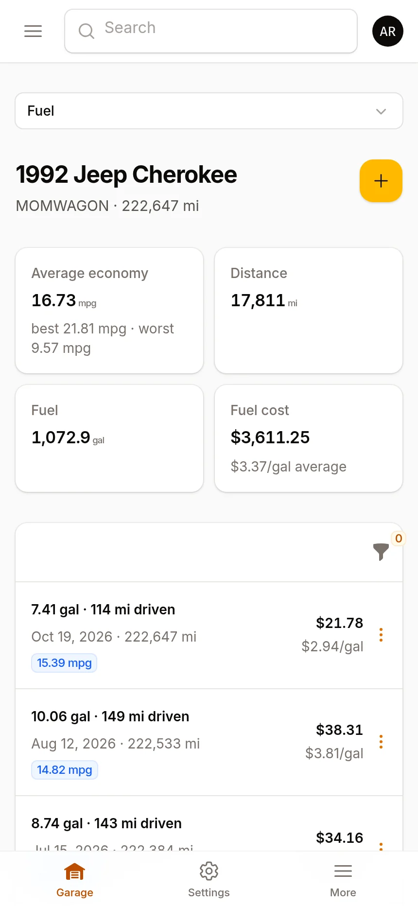
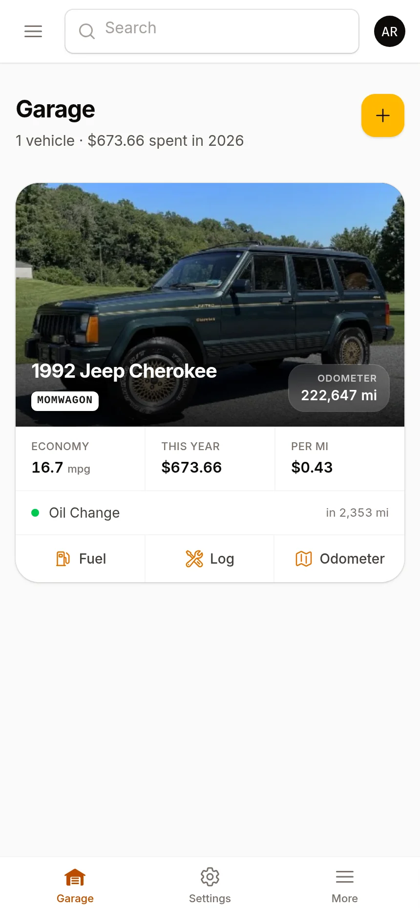
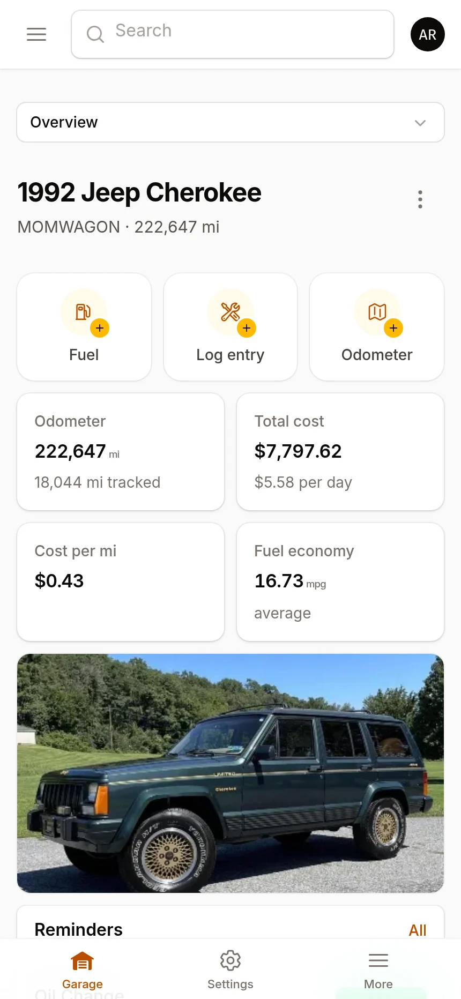
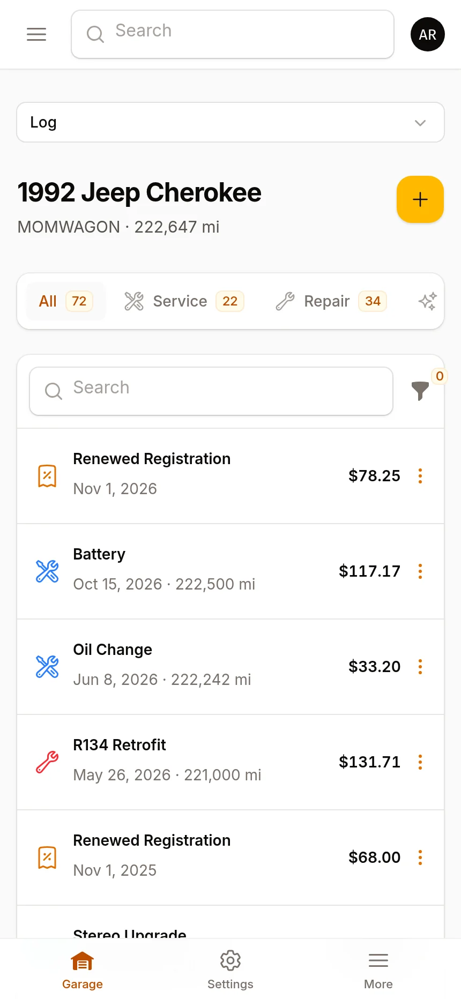
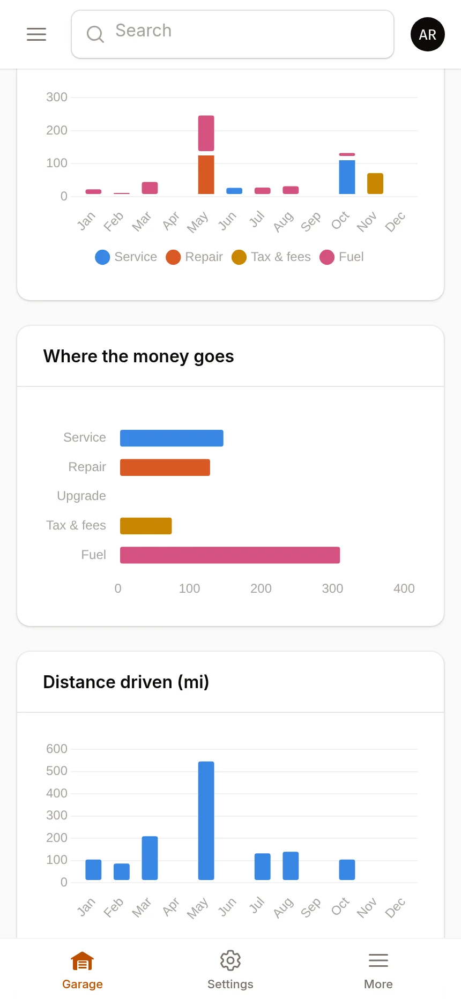
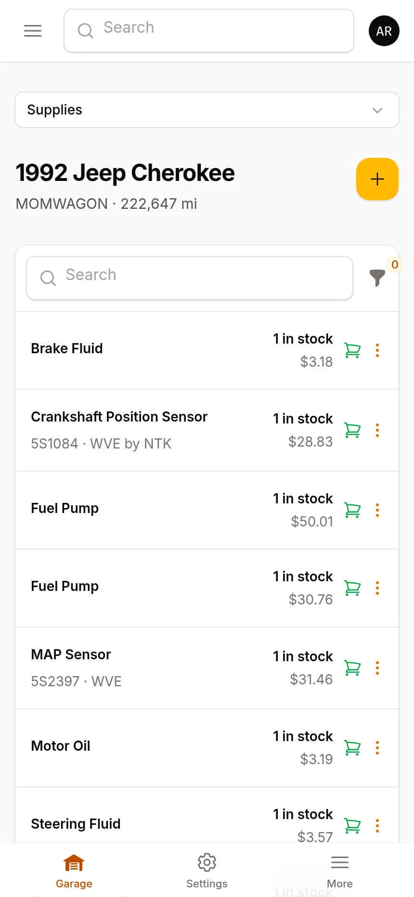
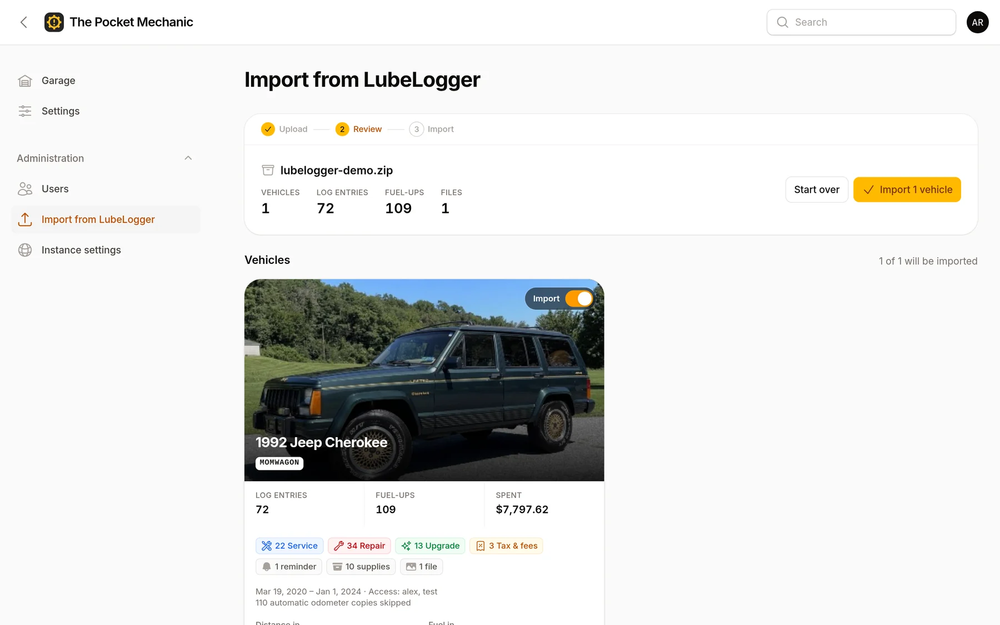
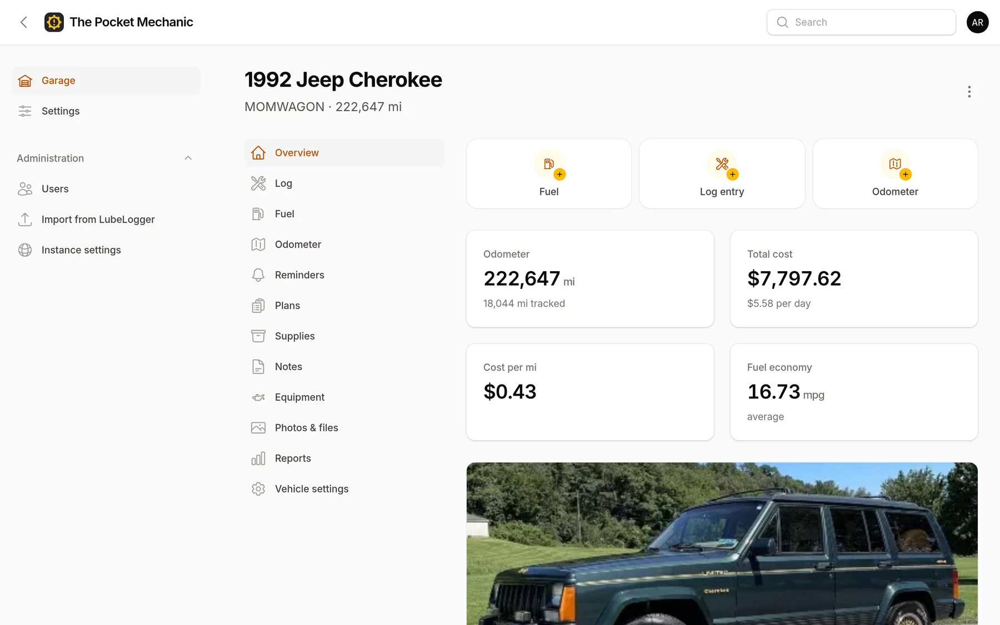
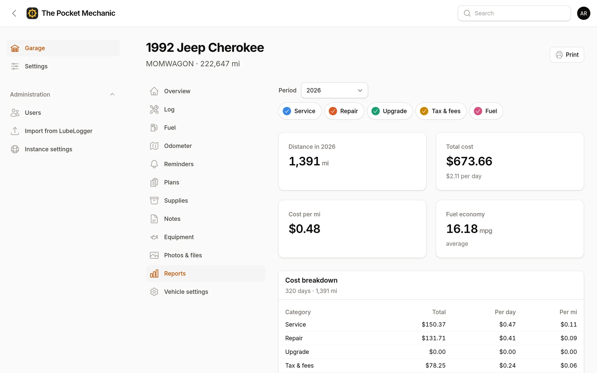

Garage
A card per vehicle with its photo, odometer, fuel economy, cost per mile or km, and what's due next.
The Pocket Mechanic tracks maintenance, fuel economy, reminders and costs for every vehicle you own. It runs on your own server, installs on your phone like an app, and brings your LubeLogger history with it.



Features
One log for services, repairs, upgrades and fees. Fuel economy that gets partial and missed fill-ups right. Reminders by date or by mileage, whichever comes first.
A card per vehicle with its photo, odometer, fuel economy, cost per mile or km, and what's due next.
L/100 km, km/L, US or UK MPG. Partial and missed fill-ups are handled; electric cars by state of charge.
By date, by mileage or both. Recurring ones move on when you mark them done, and can log the work in the same tap.
Services, repairs, upgrades, taxes and fees with attachments and tags. Plan work ahead; finishing a plan logs it.
Spending per month and category, distance, fuel economy and price trends, and a printable vehicle history.
Share a vehicle with the people you live with. No public sign-up: administrators create accounts.
Oil, filters and parts with stock that follows use. Tyre sets and accessories with the distance on each.
A gallery per vehicle with a cover photo you can crop and turn, plus registration, insurance and receipts, kept private on your server.
Big buttons, a tab bar under your thumb, and "Add to Home Screen" so it opens like an app.
On your phone
Today's date and the last odometer reading are filled in for you. Swipe through the screens below; they show LubeLogger's demo data after importing it.



Coming from LubeLogger?
Upload a LubeLogger backup and see exactly what will be imported before anything is written.
The Pocket Mechanic is a separate, independent project. It is not affiliated with, endorsed by or connected to LubeLogger or its owner; LubeLogger is named only to describe importing its backups.

And on a big screen
Reports, reminders and the full history sit side by side on a laptop or tablet.


Install
You need Docker with Docker Compose. The app key is generated on first start; there is nothing else to configure.
http://localhost:8080 and create the administrator account.Finish setup before exposing it to the internet: until the first account exists, whoever opens the page first becomes the administrator. HTTPS, backups and updating are covered in the README.